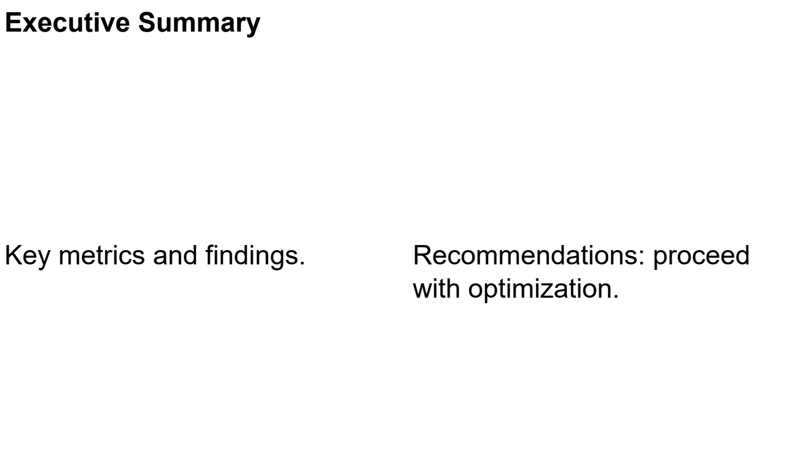

Quickstart
Install and dependencies
pip install -e ".[dev]"
Minimal example
Create a single-slide report with a grid layout:
from reporting.document import Document
from reporting.slide import Slide
from reporting.layout.geometry import Edges
from reporting.renderers.pdf.renderer import PDFRenderer
doc = Document(title="My Report")
slide = Slide(title="First Slide")
slide.grid_layout(rows=2, cols=2, gap=8, padding=Edges.all(15))
slide[0, 0].text("Hello", bold=True, size=14)
slide[0, 1].text("World", color="#C62828")
slide[1, :].text("Spanning row", size=10, font_name="Times-Roman")
doc.add_slide(slide)
PDFRenderer().render_document(doc, "output.pdf")
What each piece does
Document("My Report")— creates a report containerSlide("First Slide")— creates a page with a built-in title panel (60px)slide.grid_layout(rows=2, cols=2, gap=8, padding=Edges.all(15))— arranges a 2×2 grid with 8px gaps and 15px padding around the edgesslide[row, col]— NumPy-style cell access; returns a_CellProxy.text("...", bold=True, size=14, color="...", font_name="...")— creates aTextElementwith formatting applieddoc.add_slide(slide)— appends the slide to the documentPDFRenderer().render_document(doc, "output.pdf")— renders to PDF
Adding a plot
import matplotlib.pyplot as plt
import numpy as np
fig, ax = plt.subplots()
ax.plot(np.linspace(0, 10, 50), np.sin(np.linspace(0, 10, 50)))
slide[0, 0].plot(fig)
Adding a table
import pandas as pd
df = pd.DataFrame({"A": [1, 2], "B": [3, 4]})
slide[1, :].table(df, zebra=True)
Adding an image
slide[0, 0].image("path/to/image.png")
Renderers
from reporting.renderers.pdf.renderer import PDFRenderer
from reporting.renderers.pptx.renderer import PPTXRenderer
from reporting.renderers.html.renderer import HTMLRenderer
PDFRenderer().render_document(doc, "report.pdf")
PPTXRenderer().render_document(doc, "report.pptx")
HTMLRenderer().render_document(doc, "report.html")
Example output
{kind=link}
